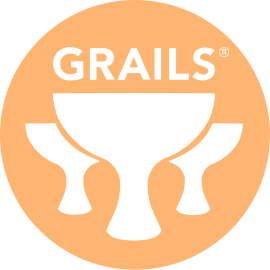
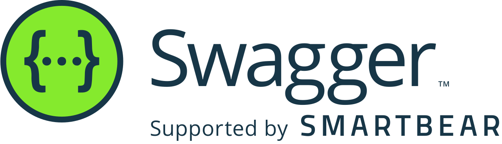

Joaquim Borges
Sou um profissional com uma formação inicial em Enfermagem e uma especialização em UTI. Com uma década de experiência como enfermeiro em alguns dos principais hospitais de Goiânia, decidi fazer uma mudança significativa há dois anos e mergulhar na área de Tecnologia da Informação. Atualmente, estou cursando Análise e Desenvolvimento de Sistemas, buscando aprimorar minhas habilidades técnicas. Nos últimos dois anos, atuei como Analista de Suporte, resolvendo desafios técnicos e fornecendo soluções eficazes. Minha paixão pelo desenvolvimento de software me levou a explorar a área como Desenvolvedor Freelancer, onde tenho aplicado ativamente meus conhecimentos recém-adquiridos. Essa transição para a TI representa não apenas uma mudança de carreira, mas também uma busca incessante por desafios estimulantes e aprendizado contínuo. Estou entusiasmado em contribuir para projetos inovadores e crescer profissionalmente nesse ambiente dinâmico da tecnologia.
Formação
Analise e Desenvolvimento de sistemas
Atualmente, estou cursando Análise e Desenvolvimento de Sistemas, um programa acadêmico que explora profundamente os fundamentos teóricos e práticos necessários para projetar e implementar sistemas de software eficientes. Este curso abrange áreas cruciais, como programação, design de banco de dados, desenvolvimento web e mobile, além de proporcionar uma compreensão abrangente do ciclo de vida do desenvolvimento de software. Ao longo do curso, tenho a oportunidade de aplicar conceitos avançados em projetos práticos, desenvolvendo habilidades essenciais para enfrentar desafios complexos no campo da tecnologia. Este percurso educacional reflete meu compromisso contínuo com o aprendizado e a busca por conhecimentos inovadores na área de Análise e Desenvolvimento de Sistemas.
Microservices Architecture - The Complete Guide
O curso abrange a arquitetura de microsserviços, fornecendo conhecimentos abrangentes sobre o design, implementação e escalabilidade de sistemas distribuídos.
Clean Code na Prática (Código Limpo)
Explora as melhores práticas de codificação e estratégias para escrever código claro, sustentável e eficiente.
Design Patterns com Java - Entendendo Padrões de Projetos
Curso que explora os padrões de projetos com foco em Java, fornecendo insights sobre melhores práticas de design de software.
Bancos de Dados SQL e NoSQL do básico ao avançado
Aborda conceitos fundamentais e avançados de bancos de dados SQL e NoSQL, fornecendo uma compreensão abrangente de sua aplicação prática.
Entendendo TypeScript
Curso que explora TypeScript, fornecendo uma compreensão aprofundada da linguagem e suas aplicações no desenvolvimento web.
Fundamentos de Expressões Regulares (Regex)
Curso abrangente sobre expressões regulares, explorando fundamentos e aplicações práticas na manipulação de texto.
Javascript, jQuery, Ajax e Json do Zero na Prática
Curso que introduz e aprofunda conceitos essenciais de Javascript, jQuery, Ajax e JSON, proporcionando habilidades práticas no desenvolvimento web.
Git Completo: Do Básico ao Avançado
Curso abrangente sobre Git, cobrindo desde os conceitos básicos até tópicos avançados de controle de versão.
Métodos ágeis de A a Z: o curso completo
Curso completo sobre metodologias ágeis, fornecendo uma compreensão abrangente de práticas e princípios ágeis no desenvolvimento de software.
Testes unitários em Java com JUnit e Mockito
Curso que explora técnicas e práticas de testes unitários em Java, utilizando as ferramentas JUnit e Mockito.
The Complete Apache Groovy Developer Course
Curso abrangente sobre a linguagem de programação Groovy, explorando seus recursos e aplicações no desenvolvimento de software.
The Complete Java Certification Course
Curso preparatório para certificação Java, cobrindo todos os tópicos necessários para se tornar um profissional certificado em Java.
Java 2022 COMPLETO: Do Zero ao Profissional
O curso oferece uma cobertura abrangente do Java, desde conceitos básicos até tópicos avançados, preparando profissionais para o desenvolvimento em Java.
Angular framework
Curso abrangente sobre o framework Angular, proporcionando conhecimentos detalhados para desenvolvimento front-end.
Grails framework
Curso que explora o framework Grails, fornecendo habilidades práticas para o desenvolvimento de aplicativos web.
Spock framework
Curso abrangente sobre o framework de teste Spock, explorando suas funcionalidades e aplicações em testes de software.
Swagger
Curso que explora o uso do Swagger para documentação de APIs, fornecendo conhecimentos práticos em documentação de software.
Experiência
Analista de Prevenção
Skills
- 

- 
Objetivo
Estou empenhado em me tornar um programador altamente qualificado, concentrando-me em linguagens como Java, Groovy, e frameworks como Grails e Angular. Com uma base sólida de trabalho em equipe, e gestão que a enfermagem me proporcionou, e a experiência anterior em TI, busco desafios significativos para aprimorar minhas habilidades e contribuir para projetos inovadores.